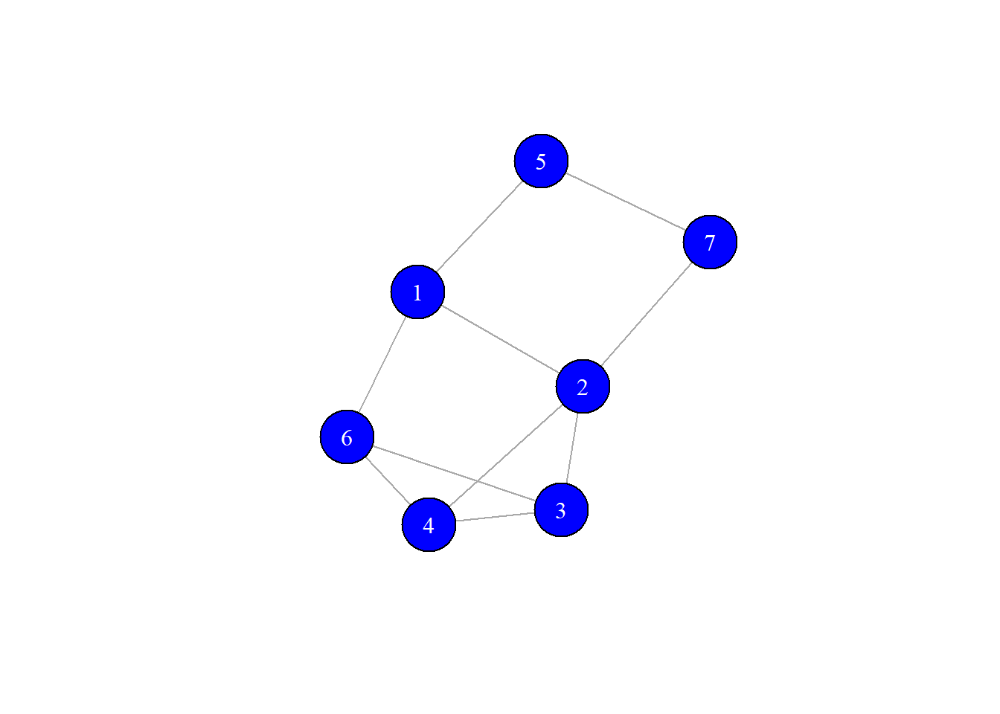
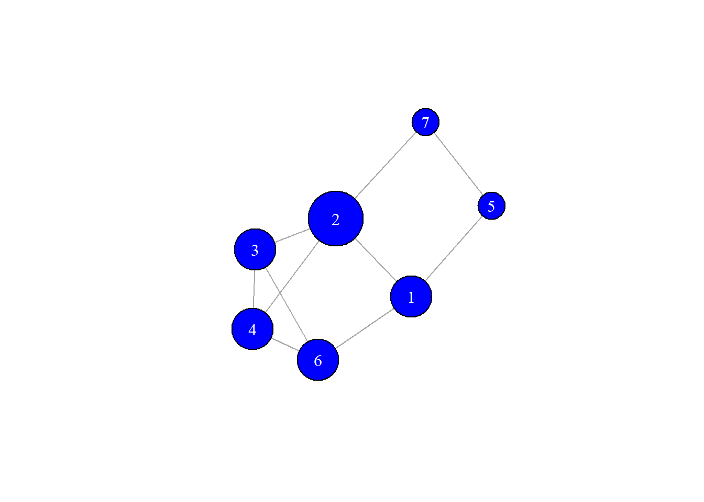
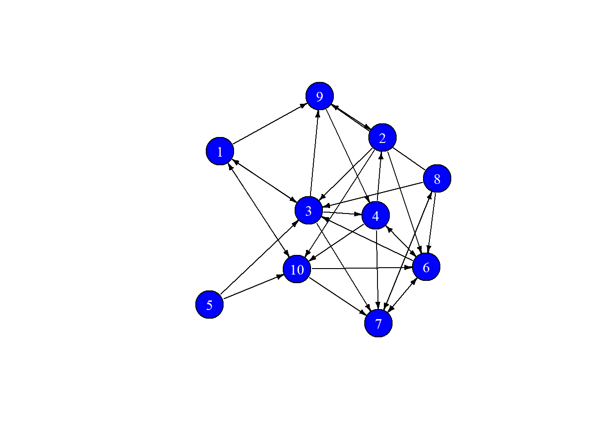
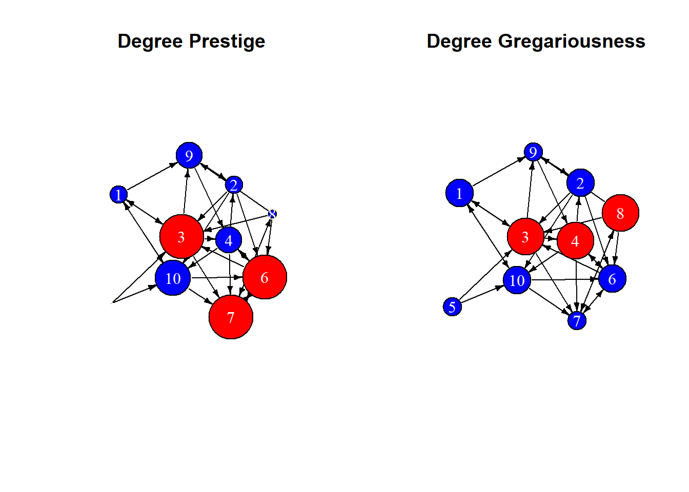
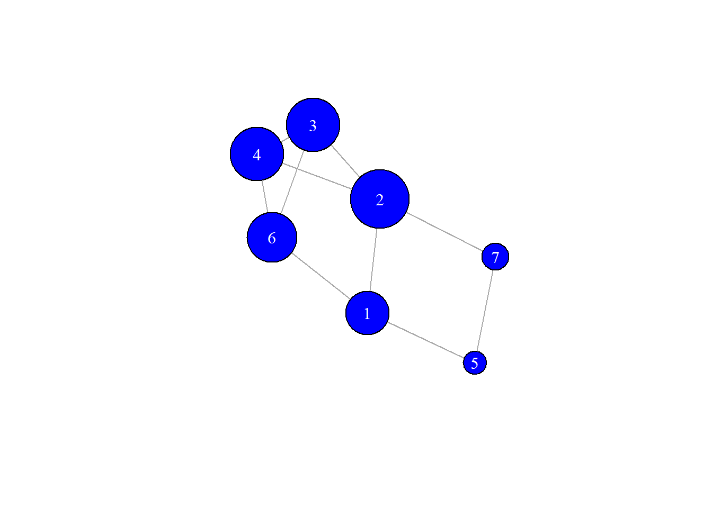
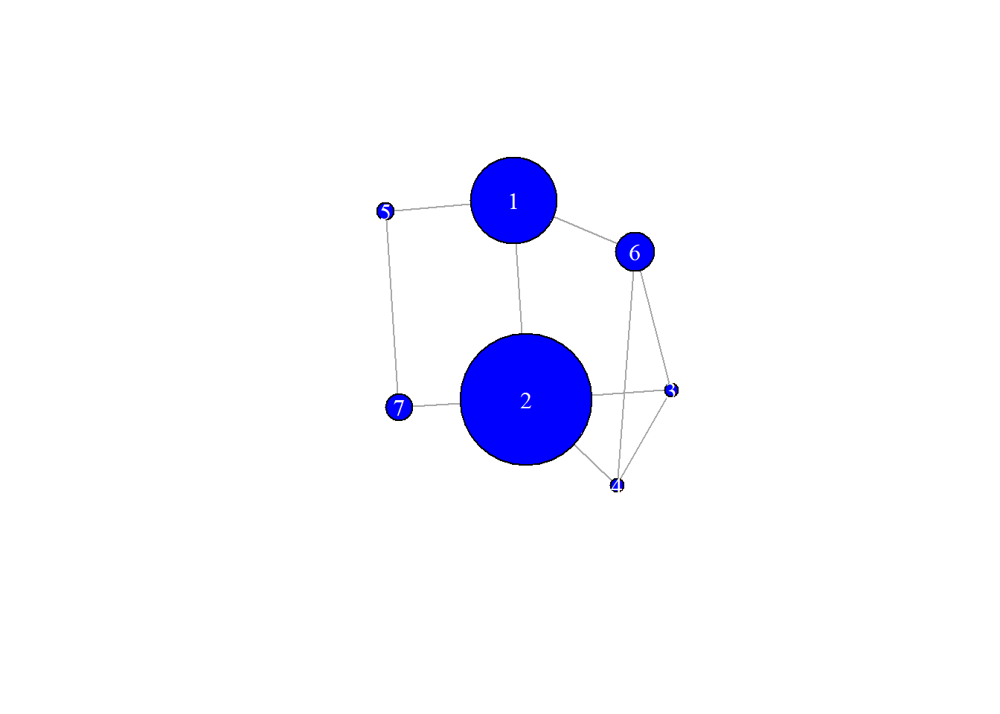
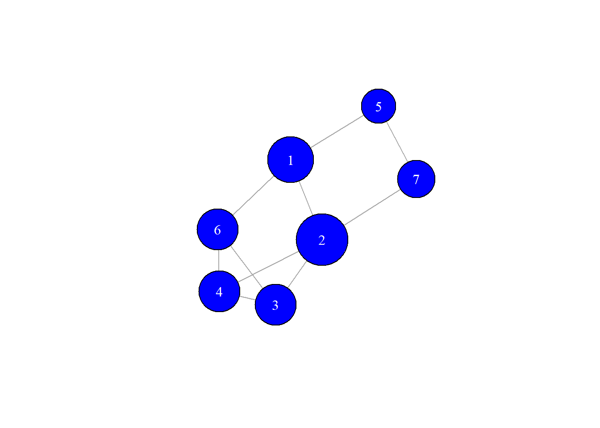
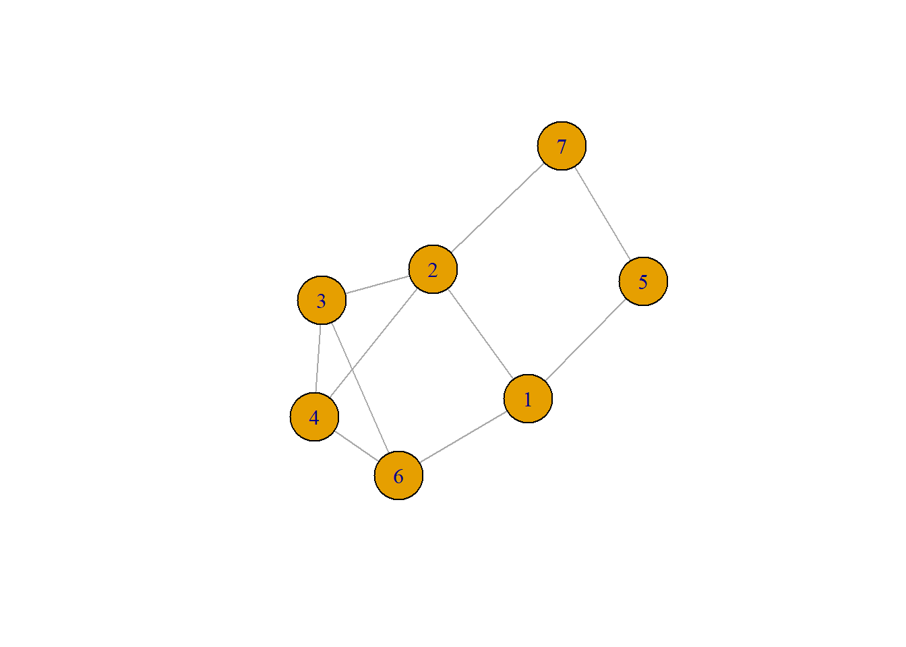
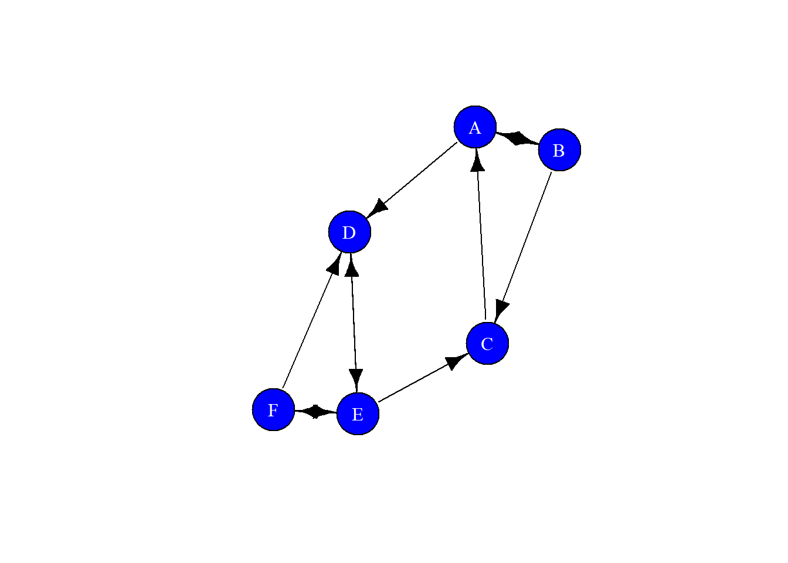

The identification of the most relevant nodes in a network is a basic task in any social network analysis. In this context there are too many different definitions that may be used each of them making a special emphasis on one property or another, however, whatever the definition all of them try to explain the prominence of an actor in a network due to its location.
There is, however, an important difference we should make between centrality and prestige:
Among the definitions we will discuss here we find the centralities
In the next sections, we are going to use the following graph

For undirected graphs, the degree centrality is just the degree of the node, i.e. the number of connections that the actor has. This is the most straightforward measure we can have in any network and denotes the potential audience of the actor.
\[\begin{equation} C_d(v_i) = k_i = \sum_j A_{ij} \end{equation}\]
Suppose an undirected social network as Facebook, the degree of one user is directly the number of friends she has. Of course, whenever she publishes anything, all her friends have a chance to see it in their news. Whether or not they interact with that publication is a complete different story, so this is not about gaining leads or any other KPI (Key Performance Index), it is just about how visible she is in the network.
The main problem with the measure as it is, is that it is order dependent, i.e. it depends on the number of actors in the networks. Therefore it is always better to find the standarized degree centrality. There is no unique standarization. Choices are: dividing by the maximum possible degree: \(N-1\), dividing by actual maximum degree: \(\text{max}_i(k_i)\) or dividing by the sum of the degrees: \(2L\), so, taking the first option, for example, we have
\[\begin{equation} C^s_d(v_i) = \frac{k_i}{N-1} = \frac{1}{N}\sum_j A_{ij} \end{equation}\]
This is, in fact, the normalization factor that we can find in igraph. The function to find the degree is just degree(), the
## 1 2 3 5 4 7 6
## 3 4 3 2 3 2 3and the normalized degree is
## 1 2 3 5 4 7 6
## 0.5000000 0.6666667 0.5000000 0.3333333 0.5000000 0.3333333 0.5000000using this values we can generate a plot of our graph using as size the degrees of the nodes

Let’s now consider the following directed network

we can define two different concepts related to the indegree and to the outdegree. We are going to write directly the normalized expressions, then
\[\begin{equation} P_d(v_i) = \frac{k_i^{in}}{N-1} \end{equation}\]
## [1] 0.2222222 0.2222222 0.5555556 0.3333333 0.0000000 0.5555556 0.5555556
## [8] 0.1111111 0.3333333 0.4444444\[\begin{equation} G_d(v_i) = \frac{k_i^{out}}{N-1} \end{equation}\]
## [1] 0.3333333 0.3333333 0.4444444 0.4444444 0.2222222 0.3333333 0.2222222
## [8] 0.4444444 0.2222222 0.3333333See that in igraph we have just been explicit with the mode argument in the call of the function. Let’s plot both graphs using prestige and gregariousness as the size of the nodes

no surprise that the leading nodes in prestige do not neccesarilly coincide with those in gregariousness.
In computing the degree centrality we did only consider that a node is important just because it has a large number of connections. However, this does not guarantee anything in real life. It is much better to consider the prominence of node in terms of how many important nodes it is connected to. This is precisely what the eigenvector centrality measures.
Since we want to keep track of the centralities of a node’s neighborhoods we propose the following definition
\[\begin{equation} C_e(v_i) = \frac{1}{\lambda}\sum_{j = 1}^N A_{ij} \cdot C_e(v_j) \end{equation}\]
for any fixed \(\lambda\), which just states that the centrality of a node is directly proportional to the sum of the centralitites of its neighborhood. If we write this equation for all the centralities of a network at one this read
\[\begin{equation} \lambda \bf{C_e = A\cdot C_e} \end{equation}\]
but this is nothing more than the characteristic equation for the eigenvector and eigvenvalues of the matrix A, hence the name eigenvector centrality.
We may come now to a problem: an \(N\times N\) matrix can have \(N\) different eigenvalues and eigenvectors (assuming that the multiplicity of each is one), so which of them should we choose? Here we may invoke Perron-Frobenius theorem to say that since we want all positive components in the eigenvector, we will always choose the largest eigenvalue.
Using igraph we have the eigen_centrality() function which can be directly used with the default options, then
eigens <- eigen_centrality(g)
cat("Eigenvalue:\n", eigens$value, "\n\nEigenvector:\n", eigens$vector)## Eigenvalue:
## 3.026666
##
## Eigenvector:
## 0.7417657 1 0.9115613 0.3976466 0.9115613 0.4617776 0.8474303we can use this centrality in the graph visualization as the sixe of the nodes, then (remember again, that the order of the nodes in the previous list is 1-2-3-5-4-7-6!!)

In social networks this measure is rather subtle since a person with a low number of connections could have a high eigenvector centrality if those few connections are very well-connected. Essentially, this centrality is a measure of who you know, not of who you are.
There are further refinements of this centrality, as Katz centrality or PageRank which are interesting but we will not see here. In any case we recommed to take a look at them and understand the differences and why they are used.
Let’s now look at the prominence of a node based on how it connects other nodes. The main point in this case is the consideration that a node is central if it lies between two other nodes. Of course, not any path is relevant in this case, only the geodesics are.
Under the assumption of equal weights and then, that any of the geodesics is equally likely to be chosen, we consider the probability that a given actor is involved in the communication between two other nodes. This probability is just a relative frequency:
\[\begin{equation} \frac{\text{number of geodesics linking the nodes $i$ and $j$ going through the node $k$}}{\text{total number of geodesics linking the nodes $i$ and $j$}} \end{equation}\]
then the betweenness is the sum extended to all the nodes of the network
\[\begin{equation} C_b(v_k) = \sum_{v_i < v_j}\frac{g_{ij}(v_k)}{g_{ij}} \end{equation}\]
As usual we can perform a normalization. In this case we can divide by its maximum possible value: \((N-1)(N-2)\), then
\[\begin{equation} C_b(v_k) = \frac{1}{(N-1)(N-2)}\sum_{v_i < v_j}\frac{g_{ij}(v_k)}{g_{ij}} \end{equation}\]
Take the node number \(5\) in our network. It does not play any role but in th connection between nodes \(1\) and \(7\) and nodes \(6\) and \(7\), then we can find the unnormalized betweenness as
\[\begin{equation} C_b(v_5) = \frac{1}{2}_{v_1,v_7} + \frac{1}{4}_{v_6,v_7} = 0.75 \end{equation}\]
we can compute this in igraph using the bewteenness() function as
## 1 2 3 5 4 7 6
## 3.6666667 5.5833333 0.5833333 0.7500000 0.5833333 1.1666667 1.6666667from where we see that the result we found matches the one in igraph. However, in order to compare values across different networks, we should always find the normalized value, then
## 1 2 3 5 4 7
## 0.24444444 0.37222222 0.03888889 0.05000000 0.03888889 0.07777778
## 6
## 0.11111111Let’s use this value to make the plot of our network with betweenness as the size

Nodes with a high betweenness are the hidden forces in the network since they are not neccesarilly visible to the other nodes of the network, but diffusion processes need them to be efficient (or even to exist in some cases!)
Let’s now look at the prominence of a node based on how close it is to other nodes. In this context, the notions of distance in the notework play a basic role. Note the main idea is that an actor is important if it can interact quickly with any other actors in the network.
We define closeness centrality as the inverse of the average shortest paths length beginning at the node
\[\begin{equation} C_c(v_i) = \frac{1}{<l_{i,j}>} \end{equation}\]
where the average shortest path length is
\[\begin{equation} <l_{i,j}> = \frac{1}{N-1}\sum_{v_j\neq v_i} l_{i,j} \end{equation}\]
In the graph we are using, taking, for example node 2 we have
\[\begin{equation} C_c(v_2) = \frac{1}{(1+1+1+1+2+2)/(7-1)}= 0.75 \end{equation}\]
note that in igraph the division by \(N-1\) in the average shortest path length is taken as an extra option of normalization, and by default it is not considered, then the proper computation is
## 1 2 3 5 4 7 6
## 0.6666667 0.7500000 0.6000000 0.5000000 0.6000000 0.5454545 0.6000000Let’s make the plot of the network using closeness as the size of the nodes

The centralities we have seen are only a few of the, literally, hundreds of different centrality indices. However, these, together with harmonic closeness, PageRank and HITS are the common toolbox in Network Analysis.
It is obvious that the study should reveal which is the centrality to use on the other hand, if we study the correlations between the different centralities we may detect that they can be typically classified in two main groups, one of them having a subdivision
| Group | Centralities |
|---|---|
| I | Eigenvector, Harmonic Closeness, PageRank, Authorities |
| II.1 | Degree, Betweenness |
| II.2 | Closeness, Hubs |
We will see this more indepth once we study Assortativity. In any case, this means that if we choose one representative of each group, we would have a rightly described network from the perspective of centralities.
The word clustering can be found in different contexts in network analysis, for example, as related to the hierarchical clustering detection of groups and communities. Note that this does not have anything to do with the actual use of the word, which denotes the tendency of a network nodes to form closed triads, in other words, closed triangles.
Clustering, then is just a measure of the transitivity in a network: If A is friend of B and B is friend of C, then A is friend of C.
Locally, we can define the local clustering coefficient as
\[\begin{equation} C_i = \frac{2L_i}{k_i(k_i-1)} \end{equation}\]
where \(L_i\) is the number of links between the \(k_i\) neighbords of node \(i\). Let’s take our network

Let’s look at node-2. Its degree is 4 since it is connected to nodes 1,3 4 and 7. To look for \(L_2\) we must now search for any possible link between any of those four nodes. It may be a good idea to explore the edge list, from where we see that only nodes 3 and 4 are connected, then we have \(L_2 = 1\), then
\[\begin{equation} C_2 = \frac{2}{12} = 0.1667 \end{equation}\]
We can find all the local clustering coefficients in a network as
## [1] 0.0000000 0.1666667 0.6666667 0.0000000 0.6666667 0.0000000 0.3333333A related measure is the average clustering coefficient, defined as the average over the order of the network
\[\begin{equation} <C> = \frac{1}{N}\sum_{i=1}^N C_i \end{equation}\]
In R we can just find it using the mean on the local clustering coefficients
## [1] 0.2619048If the network is weighted, we can use the weighted clustering coefficient, however, there is not a single unique definition of this quantity. The one used in igraph is Barrat’s definition (see the documentation) which can be found as follows
## [1] 0.0000000 0.1481481 0.7500000 0.0000000 0.6000000 0.0000000 0.4285714note the slight changes in the local coefficients. The average is again just the mean, then
## [1] 0.2752457Finally, just a comment on digraphs: if we have a directed graph, the function turns it into a directed graph before finding the coefficients.
In this case we are dealing with what is usually known as the ratio of transitive triplets, and so that is exactly what it measuring
\[\begin{equation} C_{\Delta} = \frac{3 \times \text{Number of Closed Triads}}{\text{Number of Triads}} \end{equation}\]
the only strange thing with this formula is the factor of 3, which comes from the fact that we are counting each triangle three times in the triads count and so, must be compensated.
In our graph we can see that
## [1] 0.3so it is not the average local, but it is certainly very close to it.
Just as transitivity is a triad’s property, reciprocity is a dyad’s one. The idea is you are my friend and I am yours. Formally we can see this as counting for closed loops of length two in a digraph (in undirected graphs this property makes no sense). Then, using the adjacency matrix we count for the elements in the diagonal of its second power
\[\begin{equation} R = \frac{1}{L}\text{Tr}\left( A^2\right) \end{equation}\]
where we divide by the number of links in the network as a normalization factor.
In R we can directly use the formula above, but in igraph we also have the reciprocity() function, let’s define a graph with some mutual connections and use it

this graph has 3 mutual connections and 11 edges. Then the reciprocity would just be 6/11, let’s use the function
## [1] 0.5454545